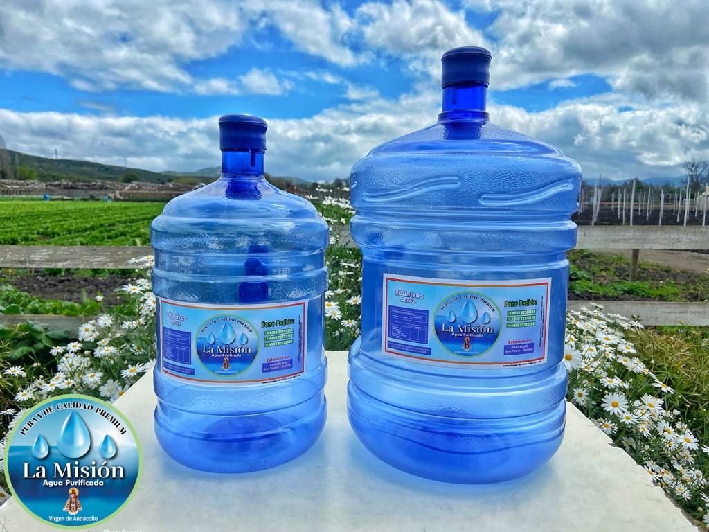
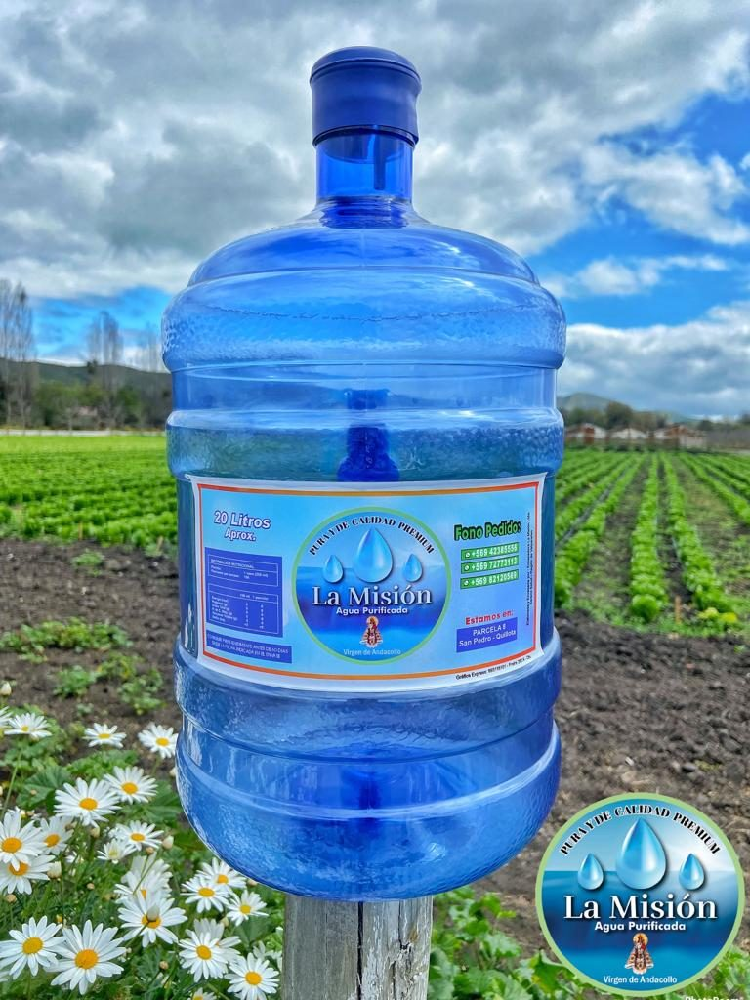
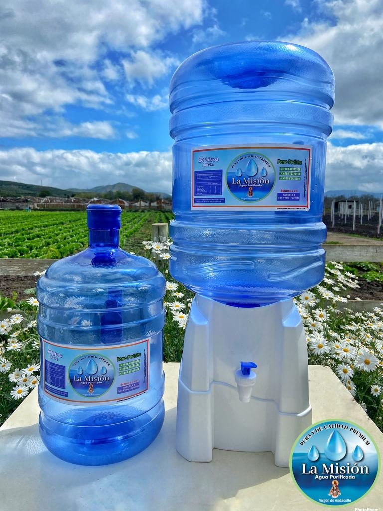
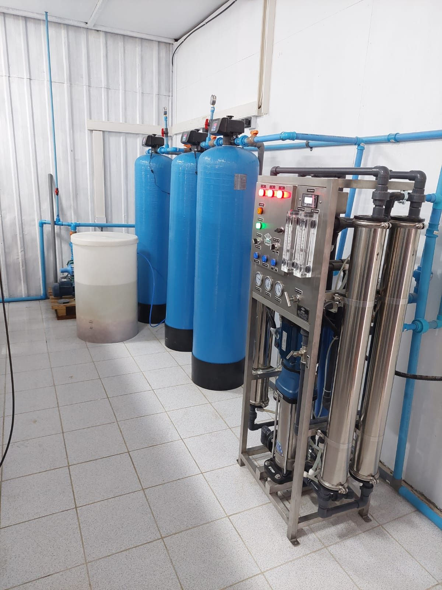
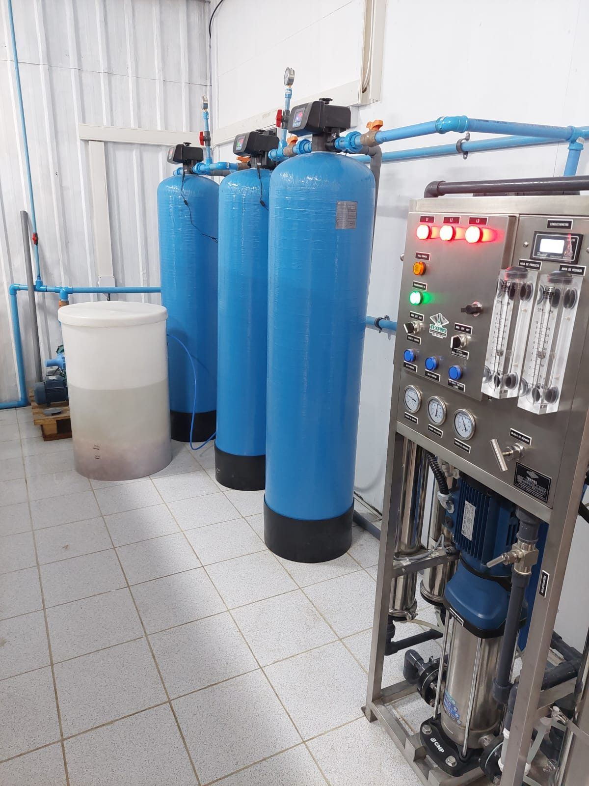
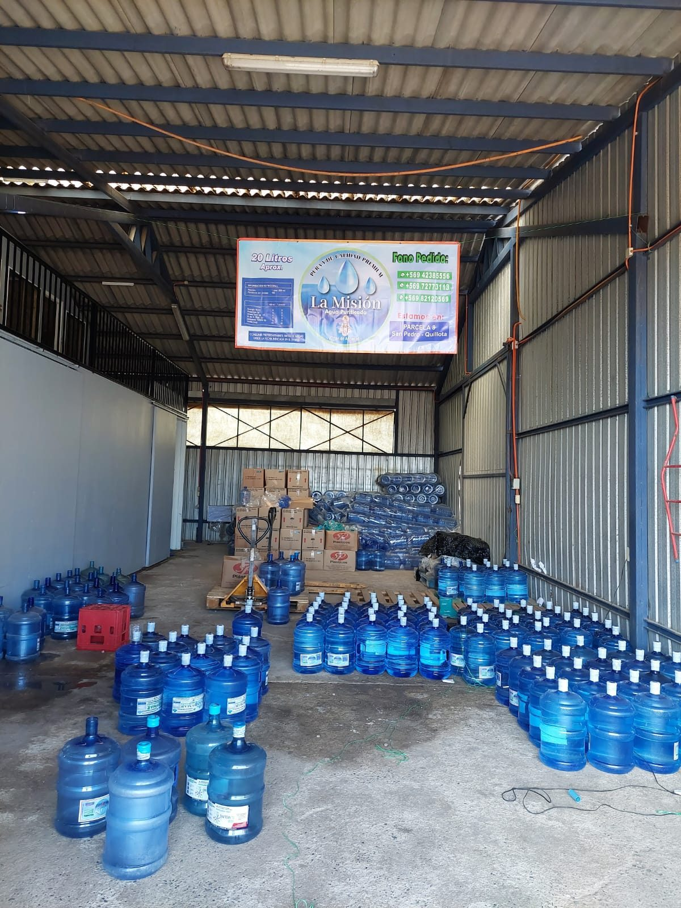
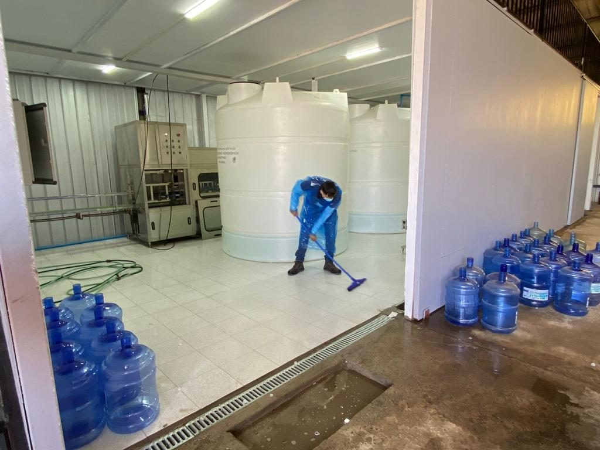

Agua purificada en San Felipe
Pureza y calidad directo a tu hogar
Recarga tu bidón de 20 litros o pide tu bidón completo con agua. Repartimos en San Felipe y alrededores.
La Misión
Agua para tu familia, negocio u oficina
En La Misión entregamos agua purificada para consumo diario, con opciones simples: recarga de bidón de 20 litros y bidón completo con agua.

Precios
Precios simples y claros
Elige entre recargar tu bidón o pedir un bidón completo con agua purificada.
💧
Recarga bidón 20L
$2.000
Para quienes ya tienen su bidón y quieren rellenarlo con agua purificada.
- Bidón de 20 litros
- Agua purificada
- Ideal para consumo diario
🚚
Bidón completo con agua
$5.000
Opción lista para usar: bidón completo con agua purificada incluida.
- Bidón completo
- Agua incluida
- Para hogar, negocio u oficina
Repartimos en San Felipe y alrededores. Pagos por transferencia Cuenta RUT o efectivo.
Cómo pedir
Pide tu agua en simples pasos
Coordina tu pedido por WhatsApp y recibe agua purificada en San Felipe y alrededores.
Escríbenos
Presiona el botón de WhatsApp y cuéntanos qué necesitas.
Elige tu pedido
Indica si quieres recarga de 20L o bidón completo con agua.
Envía tu dirección
Comparte tu ubicación o dirección dentro de San Felipe y alrededores.
Recibe tu agua
Coordina el pago por transferencia Cuenta RUT o efectivo.
Atendemos todos los días de 8:00 AM a 9:00 PM.
Hacer pedido ahoraReparto a domicilio
Llegamos a San Felipe y alrededores
Pide tu agua durante el día y coordina el reparto directamente por WhatsApp. También puedes consultar disponibilidad para tu sector.
- Horario de atención: 8:00 AM a 9:00 PM
- Pagos por transferencia Cuenta RUT o efectivo
- Pedidos para hogares, negocios y oficinas




Calidad y cuidado
Instalaciones pensadas para entregar un producto confiable
Trabajamos con espacios limpios, equipos de purificación y manejo ordenado de bidones para entregar agua fresca y lista para el consumo diario.
Próximamente podremos agregar más información de calidad, permisos o certificaciones cuando estén disponibles.
Galería
Conoce La Misión
Fotos reales de nuestros bidones, sucursal e instalaciones.


Sucursal San Felipe
Estamos cerca para que pedir sea simple
Visítanos en nuestra sucursal o coordina tu pedido por WhatsApp. Atendemos hogares, negocios y oficinas en San Felipe y alrededores.
Los Acacios 130, Villa Las Acacias, San Felipe.
Pedido rápido
¿Necesitas agua hoy? Escríbenos por WhatsApp
Cuéntanos cuántas recargas o bidones completos necesitas y coordinamos dirección, horario y forma de pago.
WhatsApp: +56 9 8809 6349
Pedir por WhatsApp
Pago
Transferencia o efectivo
Atención
8:00 AM a 9:00 PM